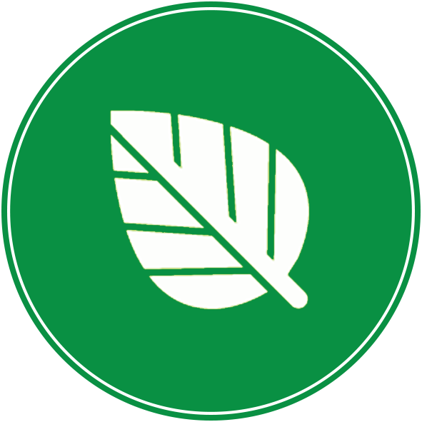
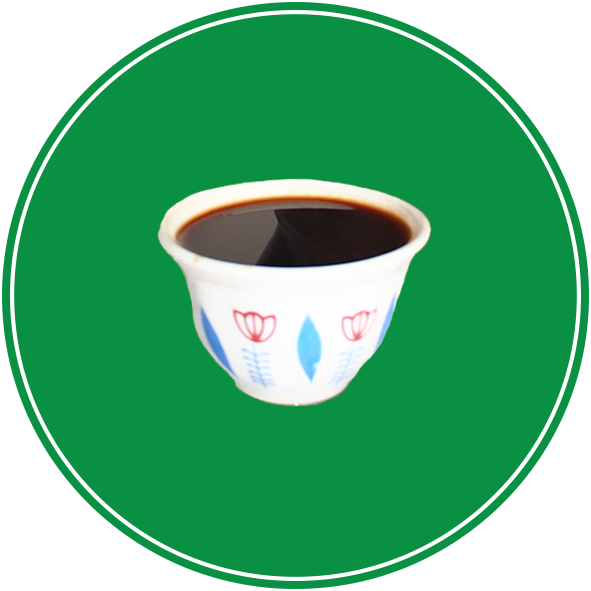

Los Angeles, CA 90018
.jpg)
Discover The Flavors
of Dashen
Check our story
Established in 1976, Dashen Restaurant has been serving our community and visitors with excellence. Dashen Terara serves exquisite signature Ethiopian cuisine with tasty Ethiopian Tej (Honey wine) and Areke (flavored organic liquors). In keeping with ancient traditions, our food is prepared with homemade spices, served in traditional galleries filled with beautiful artifacts. Along with our delicious menu topped with Ethiopian coffee ceremony, you will enjoy live Ethiopian cultural music and performance. Dashen Terara caters locally for small groups and large banquets in house and at your preferred location. Dashen Terara is ready to satisfy your palate in the beautiful capital of Addis Abeba and can also prepare delicious dishes for international consumption using safe packaging for travel.
We look forward to serving you with a smile at Dashen Terara, the landmark destination for Ethiopian traditional food and the place to be to celebrate major Ethiopian holidays with friends and family at our holiday special events.
Come and visit us to experience traditional food at its best.
Services
-

clean & safe environment
Enjoy traditional indoor and outdoor settings seating for small and large groups up to 200, secure street parking space and a beautiful garden setting.
-
Live Music
Dashen band is ready to entertain you with traditional music and professional dancers. Come to listen & watch vibrant performances on Mon-Sat from 7pm.
-

Fresh and tasty food
Dashen Terara is dedicated to maintaining over 40 years of care and tradition. Our delicious dishes are made with homemade spices and responsibly sourced meats.
-

coffee ceremony
End your meal with the billowing aroma of incense, popcorn for the spirits and a traditional cup of Ethiopian coffee.
-
Catering
Dashen Terara is prepared to make your next event an exquisite experience. Catering services available for events held at Dashen or your preferred location. We also offer safely packaged foods for international consumption.
Signature Dishes
fresh and healthy food available
Events
Don't miss our awesome events
CELEBRATE WITH US
Come and celebrate major Ethiopian holidays in Dashen Terara with great food, music and unique tradition! Enkutatash (New Year), Gena (Christmas), Meskel (Finding of the True Cross) and European New Year.